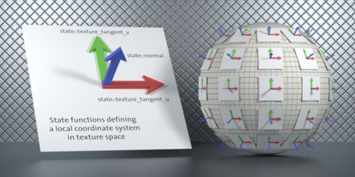

The NVIDIA Material Definition Language (MDL) is technology developed by NVIDIA to define physically-based materials for physically-based rendering solutions. The MDL SDK provides the MDL compiler as well as the runtime and back-end modules required by different architectures, enabling you to add MDL support in your applications. The MDL Core API is a lower-level compiler API within the MDL SDK; see the MDL Core API documentation for an overview.
Note: You need to build the API documentation before you can browse it from the links above.